Muhammad Ali
Public health research and data analysis
Available after my MPH in December 2026
I turn public health research and data into clear answers.
Epidemiology and biostatistics MPH candidate (4.0 GPA). At the Connecticut Department of Public Health I tracked stroke mortality trends with Joinpoint and modeled BRFSS survey data in SAS.
01
Experience
Full experience-
Feb to Aug 2026Hartford, CT
Public Health Intern, spring and summer sessions
Connecticut Department of Public Health
- Measured age-adjusted stroke mortality for Connecticut and the U.S., 2018–2024, with CDC WONDER and Joinpoint regression. Connecticut's ischemic stroke death rate rose 15.4% a year, against 6.7% nationally.
- Wrote survey-weighted SAS models (PROC SURVEYFREQ, PROC SURVEYLOGISTIC) on the 2024 Connecticut BRFSS. Adults earning under $25K had about twice the odds of heart disease (OR 2.19).
- Presented the stroke findings and three prevention and surveillance recommendations to CTDPH staff and leadership, and the BRFSS analysis to staff. Coached incoming interns on SAS.
-
Aug 2026 to nowWest Haven, CT
Research and Advocacy Fellow
WeEmbody Lab, University of New Haven
- Selected for a university working group that trains students, staff and faculty as health equity leaders and advocates.
-
Oct 2026Washington, DC
CT SOPHE Student Ambassador, Advocacy Summit and Hill Day
Society for Public Health Education (SOPHE)
- Selected by Dr. Alvin Tran to represent CT SOPHE and UNH's WeEmbody Lab, with travel and attendance funded by SOPHE's national 21st Century Student Scholarship.
- On Capitol Hill, met staff from the offices of Rep. DeLauro, Sen. Murphy and Sen. Blumenthal to ask for co-sponsorship of S.4254, the bipartisan Health Workforce Innovation Act, or appropriations support for the public health workforce.
- Completed two days of advocacy training on turning evidence into concise policy asks, and reviewed research posters from programs across the country.
-
Aug to Sep 2023Islamabad, Pakistan
Community Data Intern
National Institute of Health, field project with UNHCR
- Collected household health data in urban slum communities to assess barriers to immunization, interviewing families in Urdu, Punjabi and Hindi.
- Built Excel databases joining refugee and district-level data with UNHCR maps for program planning.
-
Aug to Oct 2022Islamabad, Pakistan
Intern, Field Epidemiology and Disease Surveillance
National Institute of Health
- Entered flood-related disease data into DHIS2 during Pakistan's 2022 floods and produced maps for response planning.
- Supported analysis and reporting of surveillance data for flood-affected communities.
Leadership and service
- Member, Advocacy Committee, Society for Public Health Education (SOPHE), 2026 to now
- Graduate Student Council Representative, Student Public Health Association, UNH, 2026 to now
- 21st Century Student Scholarship, SOPHE national award, 2026
02
Projects
All work and code03
Publication and presentations
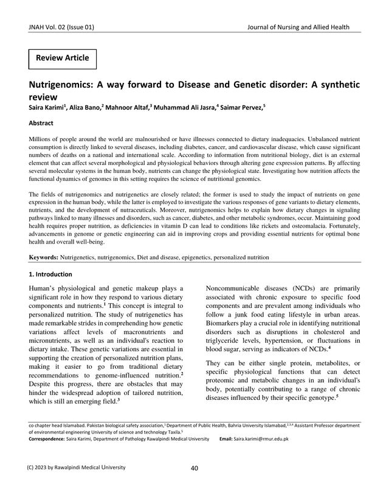
Review article · Journal of Nursing and Allied Health, Vol. 2, No. 1 · March 2024
Nutrigenomics: A way forward to disease and genetic disorder: A synthetic review
A narrative review of how nutrients change gene expression and how gene variants change the response to diet, with what that means for diabetes, cancer and cardiovascular disease. I publish as M. A. Jasra.
First page shown under the journal's CC BY-SA 4.0 license.
- Aug 2026Comparing Stroke Death Rates: CT vs. U.S. (2018–2024)Poster to staff and leadership, Connecticut Department of Public Health
- Apr 2026BRFSS chronic disease and access-to-care analysisInternal presentation, Connecticut Department of Public Health
- Apr 2026Health is Wealth: Tackling Hypertension with Culturally Tailored ExercisePoster, Next Gen Workforce Showcase, Central Connecticut State University
- Aug 2022Role of Health Education and Health Promotion in Eliminating Preventable DiseasesOral presentation, peer-reviewed abstract, 4th International Conference on Community Medicine and Public Health, Colombo, Sri Lanka
04
Education and credentials
-
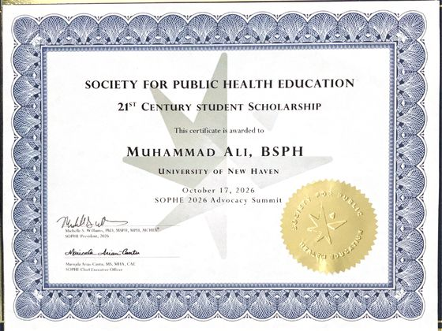
21st Century Student Scholarship Society for Public Health Education (SOPHE), national award Oct 2026 -
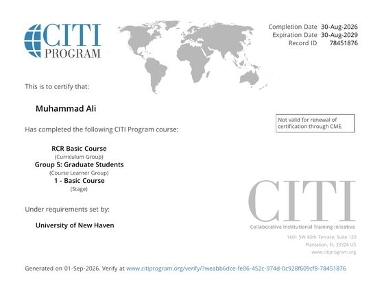
Responsible Conduct of Research CITI Program, Group 5: Graduate Students Aug 2026, valid to Aug 2029 Verify on CITI -
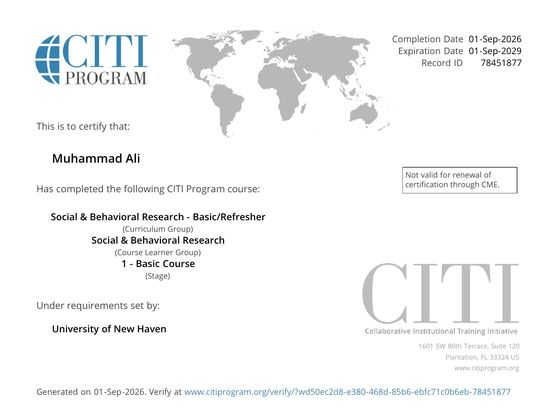
Social and Behavioral Research (human subjects) CITI Program Sep 2026, valid to Sep 2029 Verify on CITI -
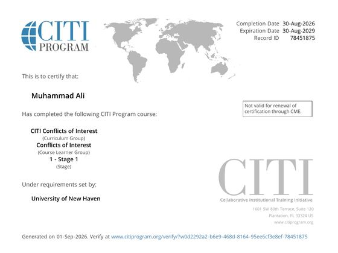
Conflicts of Interest CITI Program Aug 2026, valid to Aug 2029 Verify on CITI -
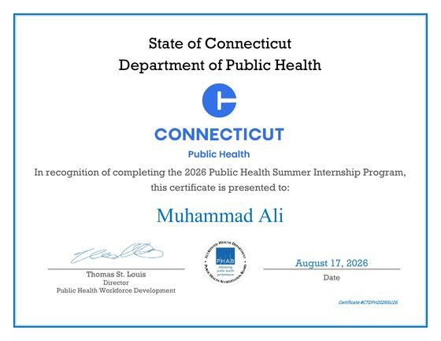
Public Health Summer Internship Program Connecticut Department of Public Health Aug 2026 -
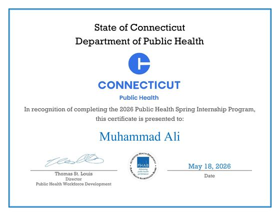
Public Health Spring Internship Program Connecticut Department of Public Health May 2026 -
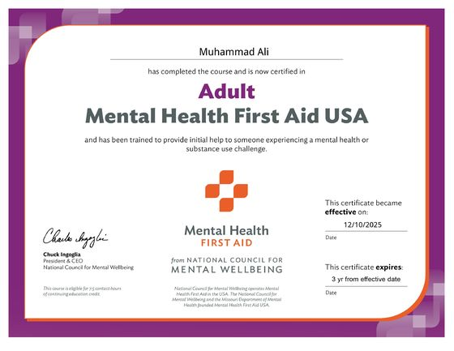
Adult Mental Health First Aid USA National Council for Mental Wellbeing Dec 2025, valid to Dec 2028 -
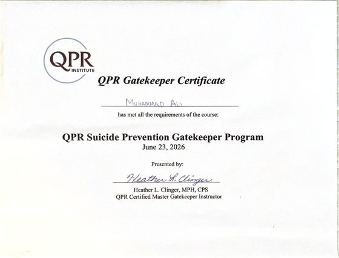
QPR Suicide Prevention Gatekeeper QPR Institute Jun 2026 -
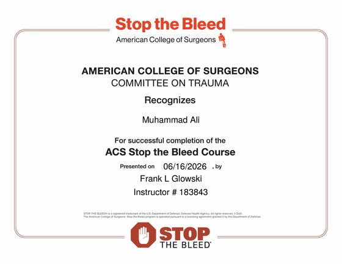
Stop the Bleed American College of Surgeons, Committee on Trauma Jun 2026 -
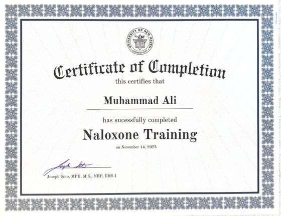
Naloxone Training University of New Haven Nov 2025 -
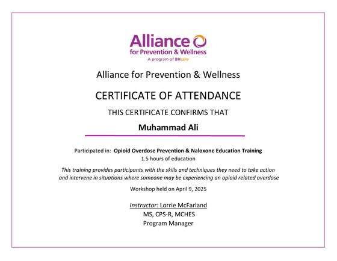
Opioid Overdose Prevention and Naloxone Education Alliance for Prevention & Wellness Apr 2025 -
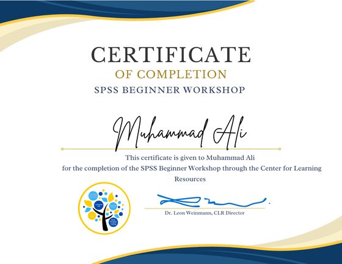
SPSS Beginner Workshop University of New Haven, Center for Learning Resources Certificate of completion -
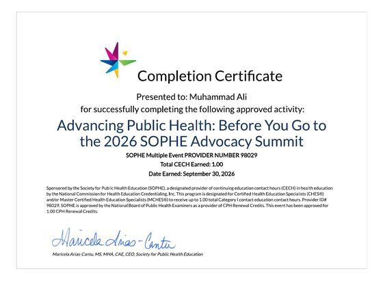
Before You Go to the 2026 SOPHE Advocacy Summit Society for Public Health Education, 1.0 CECH Sep 2026


Select a certificate to see it full size.
05
Get in touch
I'm looking for epidemiology, public health analyst, and research coordinator roles starting after December 2026, and I'm open to relocating anywhere in the U.S.
West Haven, Connecticut